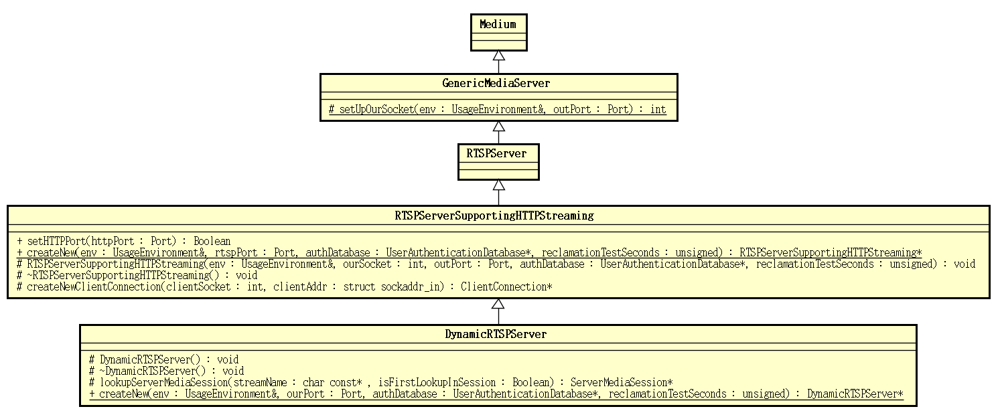
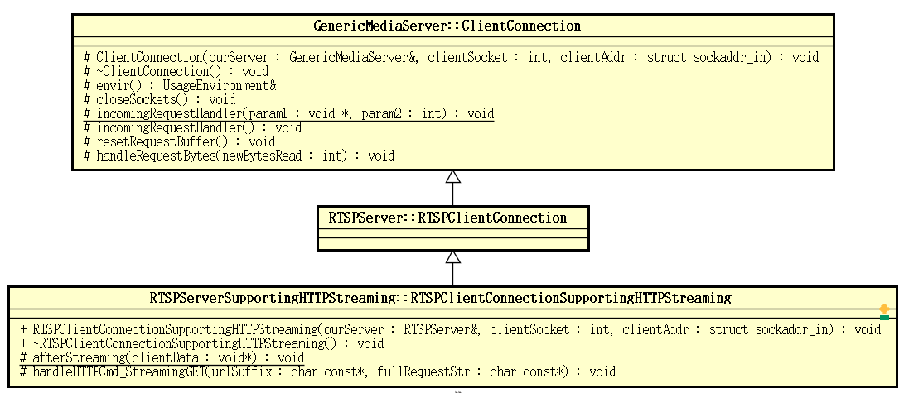

Posted on 2017-08-31 | In live555
Located in the mediaServer directory of the live555 project is "LIVE555 Media
Server", which is a complete RTSP server application. It can turn a variety of
media files into a stream and provide them to the requester.
Let's take a look at the implementation of "LIVE555 Media Server". Aside from
the code in which the application information is output to the terminal, the
code of the "LIVE555 Media Server" main program looks like this:
#include <BasicUsageEnvironment.hh>
#include "DynamicRTSPServer.hh"
#include "version.hh"
int main(int argc, char** argv) {
// Begin by setting up our usage environment:
TaskScheduler* scheduler = BasicTaskScheduler::createNew();
UsageEnvironment* env = BasicUsageEnvironment::createNew(*scheduler);
UserAuthenticationDatabase* authDB = NULL;
#ifdef ACCESS_CONTROL
// To implement client access control to the RTSP server, do the following:
authDB = new UserAuthenticationDatabase;
authDB->addUserRecord("username1", "password1"); // replace these with real strings
// Repeat the above with each <username>, <password> that you wish to allow
// access to the server.
#endif
// Create the RTSP server. Try first with the default port number (554),
// and then with the alternative port number (8554):
RTSPServer* rtspServer;
portNumBits rtspServerPortNum = 554;
rtspServer = DynamicRTSPServer::createNew(*env, rtspServerPortNum, authDB);
if (rtspServer == NULL) {
rtspServerPortNum = 8554;
rtspServer = DynamicRTSPServer::createNew(*env, rtspServerPortNum, authDB);
}
if (rtspServer == NULL) {
*env << "Failed to create RTSP server: " << env->getResultMsg() << "\n";
exit(1);
}
. . . . . .
if (rtspServer->setUpTunnelingOverHTTP(80) || rtspServer->setUpTunnelingOverHTTP(8000) || rtspServer->setUpTunnelingOverHTTP(8080)) {
*env << "(We use port " << rtspServer->httpServerPortNum() << " for optional RTSP-over-HTTP tunneling, or for HTTP live streaming (for indexed Transport Stream files only).)\n";
} else {
*env << "(RTSP-over-HTTP tunneling is not available.)\n";
}
env->taskScheduler().doEventLoop(); // does not return
return 0; // only to prevent compiler warning
}
The main program of "LIVE555 Media Server" is very simple, and the only thing to
do is as follows:
Created TaskScheduler for performing a task scheduling.
About TaskScheduler more detailed information refer to live555 source code analysis: infrastructure .
Creating UsageEnvironment a log output, I / O
operations. About UsageEnvironmentmore detailed information refer
to live555 source code analysis:infrastructure .
Create RTSPServer for accepting connections, processing request and the
like. Here we will try to use port 554 first. If it fails, try to use port
- If both ports are unusable, it will fail to exit the program.
To RTSPServer set up HTTP tunneling port. Here we will try to use the 80,
8000 and 8080 ports in turn.
Execute the event loop.
TaskScheduler For performing a task scheduling, but listening socket, and the
handler I/O event on the socket, it is necessary RTSPServer,
is DynamicRTSPServer provided. DynamicRTSPServer It is the core of the "LIVE555
Media Server" application and is defined as follows:
#ifndef _RTSP_SERVER_SUPPORTING_HTTP_STREAMING_HH
#include "RTSPServerSupportingHTTPStreaming.hh"
#endif
class DynamicRTSPServer: public RTSPServerSupportingHTTPStreaming {
public:
static DynamicRTSPServer* createNew(UsageEnvironment& env, Port ourPort,
UserAuthenticationDatabase* authDatabase,
unsigned reclamationTestSeconds = 65);
protected:
DynamicRTSPServer(UsageEnvironment& env, int ourSocket, Port ourPort,
UserAuthenticationDatabase* authDatabase, unsigned reclamationTestSeconds);
// called only by createNew();
virtual ~DynamicRTSPServer();
protected: // redefined virtual functions
virtual ServerMediaSession*
lookupServerMediaSession(char const* streamName, Boolean isFirstLookupInSession);
};
DynamicRTSPServer The class hierarchy is as follows:

To listen socket and handler on the socket I/O events is
in DynamicRTSPServer the process of creating the registration
to the TaskScheduler. DynamicRTSPServer Through its static function needs
to createNew() create the function is defined as follows:
DynamicRTSPServer*
DynamicRTSPServer::createNew(UsageEnvironment& env, Port ourPort,
UserAuthenticationDatabase* authDatabase,
unsigned reclamationTestSeconds) {
int ourSocket = setUpOurSocket(env, ourPort);
if (ourSocket == -1) return NULL;
return new DynamicRTSPServer(env, ourSocket, ourPort, authDatabase, reclamationTestSeconds);
}
DynamicRTSPServer::DynamicRTSPServer(UsageEnvironment& env, int ourSocket,
Port ourPort,
UserAuthenticationDatabase* authDatabase, unsigned reclamationTestSeconds)
: RTSPServerSupportingHTTPStreaming(env, ourSocket, ourPort, authDatabase, reclamationTestSeconds) {
}
In DynamicRTSPServer the createNew(), first create a socket, and then use this to
create a socket DynamicRTSPServer object. The constructor goes along the first
level of the class inheritance hierarchy.
RTSPServerSupportingHTTPStreaming The constructor is defined as follows:
RTSPServerSupportingHTTPStreaming
::RTSPServerSupportingHTTPStreaming(UsageEnvironment& env, int ourSocket, Port rtspPort,
UserAuthenticationDatabase* authDatabase, unsigned reclamationTestSeconds)
: RTSPServer(env, ourSocket, rtspPort, authDatabase, reclamationTestSeconds) {
}
RTSPServer The constructor is defined as follows:
RTSPServer::RTSPServer(UsageEnvironment& env,
int ourSocket, Port ourPort,
UserAuthenticationDatabase* authDatabase,
unsigned reclamationSeconds)
: GenericMediaServer(env, ourSocket, ourPort, reclamationSeconds),
fHTTPServerSocket(-1), fHTTPServerPort(0),
fClientConnectionsForHTTPTunneling(NULL), // will get created if needed
fTCPStreamingDatabase(HashTable::create(ONE_WORD_HASH_KEYS)),
fPendingRegisterOrDeregisterRequests(HashTable::create(ONE_WORD_HASH_KEYS)),
fRegisterOrDeregisterRequestCounter(0), fAuthDB(authDatabase), fAllowStreamingRTPOverTCP(True) {
}
GenericMediaServer The constructor is defined as follows:
GenericMediaServer
::GenericMediaServer(UsageEnvironment& env, int ourSocket, Port ourPort,
unsigned reclamationSeconds)
: Medium(env),
fServerSocket(ourSocket), fServerPort(ourPort), fReclamationSeconds(reclamationSeconds),
fServerMediaSessions(HashTable::create(STRING_HASH_KEYS)),
fClientConnections(HashTable::create(ONE_WORD_HASH_KEYS)),
fClientSessions(HashTable::create(STRING_HASH_KEYS)) {
ignoreSigPipeOnSocket(fServerSocket); // so that clients on the same host that are killed don't also kill us
// Arrange to handle connections from others:
env.taskScheduler().turnOnBackgroundReadHandling(fServerSocket, incomingConnectionHandler, this);
}
In the GenericMediaServer constructor, to listen Server socket and I/O event on the socket handler is registered to the task scheduler. The handler is called when an I/O event occurs on the socket detected in the event loop. The registered event handler is GenericMediaServer::incomingConnectionHandler().
Medium The constructor is defined as follows:
Medium::Medium(UsageEnvironment& env)
: fEnviron(env), fNextTask(NULL) {
// First generate a name for the new medium:
MediaLookupTable::ourMedia(env)->generateNewName(fMediumName, mediumNameMaxLen);
env.setResultMsg(fMediumName);
// Then add it to our table:
MediaLookupTable::ourMedia(env)->addNew(this, fMediumName);
}
In Medium mainly byMediaLookupTable maintaining a medium name to Medium map
objects. MediaLookupTable can be regarded as BasicHashTable a value of
type Medium Patent object pointer, the class is defined as follows:
class MediaLookupTable {
public:
static MediaLookupTable* ourMedia(UsageEnvironment& env);
HashTable const& getTable() { return *fTable; }
protected:
MediaLookupTable(UsageEnvironment& env);
virtual ~MediaLookupTable();
private:
friend class Medium;
Medium* lookup(char const* name) const;
// Returns NULL if none already exists
void addNew(Medium* medium, char* mediumName);
void remove(char const* name);
void generateNewName(char* mediumName, unsigned maxLen);
private:
UsageEnvironment& fEnv;
HashTable* fTable;
unsigned fNameGenerator;
};
MediaLookupTable The actual quote from the UsageEnvironment holding:
_Tables* _Tables::getOurTables(UsageEnvironment& env, Boolean createIfNotPresent) {
if (env.liveMediaPriv == NULL && createIfNotPresent) {
env.liveMediaPriv = new _Tables(env);
}
return (_Tables*)(env.liveMediaPriv);
}
. . . . . .
MediaLookupTable* MediaLookupTable::ourMedia(UsageEnvironment& env) {
_Tables* ourTables = _Tables::getOurTables(env);
if (ourTables->mediaTable == NULL) {
// Create a new table to record the media that are to be created in
// this environment:
ourTables->mediaTable = new MediaLookupTable(env);
}
return ourTables->mediaTable;
}
. . . . . .
void MediaLookupTable::generateNewName(char* mediumName,
unsigned /*maxLen*/) {
// We should really use snprintf() here, but not all systems have it
sprintf(mediumName, "liveMedia%d", fNameGenerator++);
}
MediaLookupTable::MediaLookupTable(UsageEnvironment& env)
: fEnv(env), fTable(HashTable::create(STRING_HASH_KEYS)), fNameGenerator(0) {
}
medium name in the Medium distribution construction process, created Medium at
this time are added MediaLookupTable in:
void MediaLookupTable::addNew(Medium* medium, char* mediumName) {
fTable->Add(mediumName, (void*)medium);
}
. . . . . .
void MediaLookupTable::generateNewName(char* mediumName,
unsigned /*maxLen*/) {
// We should really use snprintf() here, but not all systems have it
sprintf(mediumName, "liveMedia%d", fNameGenerator++);
}
1.1. Server socket creation and connection establishment
In DynamicRTSPServer the createNew() created DynamicRTSPServer before the object
will first by setUpOurSocket() creating a socket, setUpOurSocket()
is GenericMediaServer a static function, which is defined as:
int GenericMediaServer::setUpOurSocket(UsageEnvironment& env, Port& ourPort) {
int ourSocket = -1;
do {
// The following statement is enabled by default.
// Don't disable it (by defining ALLOW_SERVER_PORT_REUSE) unless you know what you're doing.
#if !defined(ALLOW_SERVER_PORT_REUSE) && !defined(ALLOW_RTSP_SERVER_PORT_REUSE)
// ALLOW_RTSP_SERVER_PORT_REUSE is for backwards-compatibility #####
NoReuse dummy(env); // Don't use this socket if there's already a local server using it
#endif
ourSocket = setupStreamSocket(env, ourPort);
if (ourSocket < 0) break;
// Make sure we have a big send buffer:
if (!increaseSendBufferTo(env, ourSocket, 50*1024)) break;
// Allow multiple simultaneous connections:
if (listen(ourSocket, LISTEN_BACKLOG_SIZE) < 0) {
env.setResultErrMsg("listen() failed: ");
break;
}
if (ourPort.num() == 0) {
// bind() will have chosen a port for us; return it also:
if (!getSourcePort(env, ourSocket, ourPort)) break;
}
return ourSocket;
} while (0);
if (ourSocket != -1) ::closeSocket(ourSocket);
return -1;
}
GenericMediaServer::setUpOurSocket() That is, mainly,
by setupStreamSocket() creating a function a TCP socket, the socket's send buffer
increases, and listen to the socket.
setupStreamSocket() The function is defined in the groupsock module:
_groupsockPriv* groupsockPriv(UsageEnvironment& env) {
if (env.groupsockPriv == NULL) { // We need to create it
_groupsockPriv* result = new _groupsockPriv;
result->socketTable = NULL;
result->reuseFlag = 1; // default value => allow reuse of socket numbers
env.groupsockPriv = result;
}
return (_groupsockPriv*)(env.groupsockPriv);
}
void reclaimGroupsockPriv(UsageEnvironment& env) {
_groupsockPriv* priv = (_groupsockPriv*)(env.groupsockPriv);
if (priv->socketTable == NULL && priv->reuseFlag == 1/*default value*/) {
// We can delete the structure (to save space); it will get created again, if needed:
delete priv;
env.groupsockPriv = NULL;
}
}
static int createSocket(int type) {
// Call "socket()" to create a (IPv4) socket of the specified type.
// But also set it to have the 'close on exec' property (if we can)
int sock;
#ifdef SOCK_CLOEXEC
sock = socket(AF_INET, type|SOCK_CLOEXEC, 0);
if (sock != -1 || errno != EINVAL) return sock;
// An "errno" of EINVAL likely means that the system wasn't happy with the SOCK_CLOEXEC; fall through and try again without it:
#endif
sock = socket(AF_INET, type, 0);
#ifdef FD_CLOEXEC
if (sock != -1) fcntl(sock, F_SETFD, FD_CLOEXEC);
#endif
return sock;
}
. . . . . .
int setupStreamSocket(UsageEnvironment& env,
Port port, Boolean makeNonBlocking) {
if (!initializeWinsockIfNecessary()) {
socketErr(env, "Failed to initialize 'winsock': ");
return -1;
}
int newSocket = createSocket(SOCK_STREAM);
if (newSocket < 0) {
socketErr(env, "unable to create stream socket: ");
return newSocket;
}
int reuseFlag = groupsockPriv(env)->reuseFlag;
reclaimGroupsockPriv(env);
if (setsockopt(newSocket, SOL_SOCKET, SO_REUSEADDR,
(const char*)&reuseFlag, sizeof reuseFlag) < 0) {
socketErr(env, "setsockopt(SO_REUSEADDR) error: ");
closeSocket(newSocket);
return -1;
}
// SO_REUSEPORT doesn't really make sense for TCP sockets, so we
// normally don't set them. However, if you really want to do this
// #define REUSE_FOR_TCP
#ifdef REUSE_FOR_TCP
#if defined(__WIN32__) || defined(_WIN32)
// Windoze doesn't properly handle SO_REUSEPORT
#else
#ifdef SO_REUSEPORT
if (setsockopt(newSocket, SOL_SOCKET, SO_REUSEPORT,
(const char*)&reuseFlag, sizeof reuseFlag) < 0) {
socketErr(env, "setsockopt(SO_REUSEPORT) error: ");
closeSocket(newSocket);
return -1;
}
#endif
#endif
#endif
// Note: Windoze requires binding, even if the port number is 0
#if defined(__WIN32__) || defined(_WIN32)
#else
if (port.num() != 0 || ReceivingInterfaceAddr != INADDR_ANY) {
#endif
MAKE_SOCKADDR_IN(name, ReceivingInterfaceAddr, port.num());
if (bind(newSocket, (struct sockaddr*)&name, sizeof name) != 0) {
char tmpBuffer[100];
sprintf(tmpBuffer, "bind() error (port number: %d): ",
ntohs(port.num()));
socketErr(env, tmpBuffer);
closeSocket(newSocket);
return -1;
}
#if defined(__WIN32__) || defined(_WIN32)
#else
}
#endif
if (makeNonBlocking) {
if (!makeSocketNonBlocking(newSocket)) {
socketErr(env, "failed to make non-blocking: ");
closeSocket(newSocket);
return -1;
}
}
return newSocket;
}
Here is basically to create a TCP socket, set the RESUE option for the socket,
bind the socket to the target port, and set the socket to be non-blocking as
needed.
Then, in live555, how to start listening for I/O events on the server socket and
handling these events.
We see that in GenericMediaServer the constructor for receiving client-initiated
server socket connection, and I/O event handler on the socket, is registered
to the task scheduler. This handler is called when a client initiates a
connection to the "LIVE555 Media Server". The event handler
is GenericMediaServer::incomingConnectionHandler(), the related functions are
declared as:
class GenericMediaServer: public Medium {
. . . . . .
protected:
. . . . . .
static void incomingConnectionHandler(void*, int /*mask*/);
void incomingConnectionHandler();
void incomingConnectionHandlerOnSocket(int serverSocket);
. . . . . .
protected:
virtual ClientConnection* createNewClientConnection(int clientSocket, struct sockaddr_in clientAddr) = 0;
GenericMediaServer::incomingConnectionHandler() is a static
function, incomingConnectionHandler() and
incomingConnectionHandlerOnSocket(int serverSocket) For non-virtual functions,
they are defined as:
void GenericMediaServer::incomingConnectionHandler(void* instance, int /*mask*/) {
GenericMediaServer* server = (GenericMediaServer*)instance;
server->incomingConnectionHandler();
}
void GenericMediaServer::incomingConnectionHandler() {
incomingConnectionHandlerOnSocket(fServerSocket);
}
void GenericMediaServer::incomingConnectionHandlerOnSocket(int serverSocket) {
struct sockaddr_in clientAddr;
SOCKLEN_T clientAddrLen = sizeof clientAddr;
int clientSocket = accept(serverSocket, (struct sockaddr*)&clientAddr, &clientAddrLen);
if (clientSocket < 0) {
int err = envir().getErrno();
if (err != EWOULDBLOCK) {
envir().setResultErrMsg("accept() failed: ");
}
return;
}
ignoreSigPipeOnSocket(clientSocket); // so that clients on the same host that are killed don't also kill us
makeSocketNonBlocking(clientSocket);
increaseSendBufferTo(envir(), clientSocket, 50*1024);
#ifdef DEBUG
envir() << "accept()ed connection from " << AddressString(clientAddr).val() << "\n";
#endif
// Create a new object for handling this connection:
(void)createNewClientConnection(clientSocket, clientAddr);
}
It can be seen that when a client-initiated connection request is found on the
monitored server socket, the processing is generally:
By accept() obtaining a new socket connection established.
Set the option for the new socket to make it a non-blocking socket and
increase the send buffer for that socket. Take a look at these functions
that set the socket option in live555, which are defined in the groupsock
module:
Boolean makeSocketNonBlocking(int sock) {
. . . . . .
int curFlags = fcntl(sock, F_GETFL, 0);
return fcntl(sock, F_SETFL, curFlags|O_NONBLOCK) >= 0;
#endif
}
. . . . . .
void ignoreSigPipeOnSocket(int socketNum) {
. . . . . .
signal(SIGPIPE, SIG_IGN);
#endif
#endif
}
static unsigned getBufferSize(UsageEnvironment& env, int bufOptName,
int socket) {
unsigned curSize;
SOCKLEN_T sizeSize = sizeof curSize;
if (getsockopt(socket, SOL_SOCKET, bufOptName,
(char*)&curSize, &sizeSize) < 0) {
socketErr(env, "getBufferSize() error: ");
return 0;
}
return curSize;
}
. . . . . .
static unsigned increaseBufferTo(UsageEnvironment& env, int bufOptName,
int socket, unsigned requestedSize) {
// First, get the current buffer size. If it's already at least
// as big as what we're requesting, do nothing.
unsigned curSize = getBufferSize(env, bufOptName, socket);
// Next, try to increase the buffer to the requested size,
// or to some smaller size, if that's not possible:
while (requestedSize > curSize) {
SOCKLEN_T sizeSize = sizeof requestedSize;
if (setsockopt(socket, SOL_SOCKET, bufOptName,
(char*)&requestedSize, sizeSize) >= 0) {
// success
return requestedSize;
}
requestedSize = (requestedSize+curSize)/2;
}
return getBufferSize(env, bufOptName, socket);
}
unsigned increaseSendBufferTo(UsageEnvironment& env,
int socket, unsigned requestedSize) {
return increaseBufferTo(env, SO_SNDBUF, socket, requestedSize);
}
- By
createNewClientConnection(), create a new client
connection ClientConnection. createNewClientConnection() is a pure virtual
function, its implementation will be realized in the class hierarchy of the
function of the lowest class in the class inheritance hierarchy, for
DynamicRTSPServer -> RTSPServerSupportingHTTPStreaming -> RTSPServer -> GenericMediaServer this inheritance hierarchy, from the DynamicRTSPServer class began, looking up
step by step, you can We found that createNewClientConnection() implementation of the function in the RTSPServerSupportingHTTPStreaming class.
RTSPServerSupportingHTTPStreaming The
createNewClientConnection() function of the class is defined as follows:
GenericMediaServer::ClientConnection*
RTSPServerSupportingHTTPStreaming::createNewClientConnection(int clientSocket, struct sockaddr_in clientAddr) {
return new RTSPClientConnectionSupportingHTTPStreaming(*this, clientSocket, clientAddr);
}
RTSPServerSupportingHTTPStreaming::RTSPClientConnectionSupportingHTTPStreaming
::RTSPClientConnectionSupportingHTTPStreaming(RTSPServer& ourServer, int clientSocket, struct sockaddr_in clientAddr)
: RTSPClientConnection(ourServer, clientSocket, clientAddr),
fClientSessionId(0), fStreamSource(NULL), fPlaylistSource(NULL), fTCPSink(NULL) {
}
Here simply create a RTSPClientConnectionSupportingHTTPStreaming class object. In
live555, washed with GenericMediaServer interior
class GenericMediaServer::ClientConnection represents a client connection. For
the "LIVE555 Media Server", the inheritance hierarchy of this class is shown in
the following figure:

RTSPClientConnectionSupportingHTTPStreaming Class object constructor call parent
class RTSPServer::RTSPClientConnection constructor, which is implemented as:
GenericMediaServer::ClientConnection
::ClientConnection(GenericMediaServer& ourServer, int clientSocket, struct sockaddr_in clientAddr)
: fOurServer(ourServer), fOurSocket(clientSocket), fClientAddr(clientAddr) {
// Add ourself to our 'client connections' table:
fOurServer.fClientConnections->Add((char const*)this, this);
// Arrange to handle incoming requests:
resetRequestBuffer();
envir().taskScheduler()
.setBackgroundHandling(fOurSocket, SOCKET_READABLE|SOCKET_EXCEPTION, incomingRequestHandler, this);
}
RTSPServer::RTSPClientConnection Constructor continues to call its parent
class GenericMediaServer::ClientConnection constructor:
void GenericMediaServer::ClientConnection::incomingRequestHandler(void* instance, int /*mask*/) {
ClientConnection* connection = (ClientConnection*)instance;
connection->incomingRequestHandler();
}
void GenericMediaServer::ClientConnection::incomingRequestHandler() {
struct sockaddr_in dummy; // 'from' address, meaningless in this case
int bytesRead = readSocket(envir(), fOurSocket, &fRequestBuffer[fRequestBytesAlreadySeen], fRequestBufferBytesLeft, dummy);
handleRequestBytes(bytesRead);
}
In live555, it is GenericMediaServer used to perform common media server-related
management, including managing all client
connections. GenericMediaServer::ClientConnection Constructor added adds its
own GenericMediaServer hash table fClientConnections in. More importantly, the
client-attached socket and the I/O event handler on the socket are registered to
the task scheduler, where the I/O event handler is
GenericMediaServer::ClientConnection::incomingRequestHandler() function.
In other words, the interaction with the client in "LIVE555 Media Server" will
be
GenericMediaServer::ClientConnection::incomingRequestHandler() The function is
completed, this function is defined as follows:
void GenericMediaServer::ClientConnection::incomingRequestHandler(void* instance, int /*mask*/) {
ClientConnection* connection = (ClientConnection*)instance;
connection->incomingRequestHandler();
}
void GenericMediaServer::ClientConnection::incomingRequestHandler() {
struct sockaddr_in dummy; // 'from' address, meaningless in this case
int bytesRead = readSocket(envir(), fOurSocket, &fRequestBuffer[fRequestBytesAlreadySeen], fRequestBufferBytesLeft, dummy);
handleRequestBytes(bytesRead);
}
In GenericMediaServer::ClientConnection the incomingRequestHandler() middle, to
read data from the client socket connection, and then
calls handleRequestBytes() the function for further processing.
Reading data from the operation module groupsock readSocket() completed:
int readSocket(UsageEnvironment& env,
int socket, unsigned char* buffer, unsigned bufferSize,
struct sockaddr_in& fromAddress) {
SOCKLEN_T addressSize = sizeof fromAddress;
int bytesRead = recvfrom(socket, (char*)buffer, bufferSize, 0,
(struct sockaddr*)&fromAddress,
&addressSize);
if (bytesRead < 0) {
//##### HACK to work around bugs in Linux and Windows:
int err = env.getErrno();
if (err == 111 /*ECONNREFUSED (Linux)*/
. . . . . .
|| err == EAGAIN
#endif
|| err == 113 /*EHOSTUNREACH (Linux)*/) { // Why does Linux return this for datagram sock?
fromAddress.sin_addr.s_addr = 0;
return 0;
}
//##### END HACK
socketErr(env, "recvfrom() error: ");
} else if (bytesRead == 0) {
// "recvfrom()" on a stream socket can return 0 if the remote end has closed the connection. Treat this as an error:
return -1;
}
return bytesRead;
}
Here by recvfrom() reading data from the socket functions.
GenericMediaServer::ClientConnection In the process, the functions that handle
client requests are declared as follows:
static void incomingRequestHandler(void*, int /*mask*/);
void incomingRequestHandler();
virtual void handleRequestBytes(int newBytesRead) = 0;
handleRequestBytes() For pure virtual functions, it needs to be implemented by subclasses. for
RTSPServerSupportingHTTPStreaming::RTSPClientConnectionSupportingHTTPStreaming -> RTSPServer::RTSPClientConnection -> GenericMediaServer::ClientConnection. The inheritance hierarchy, implementation of the function is actually
located in RTSPServer::RTSPClientConnection.
The request received from the client will be RTSPServer::RTSPClientConnection::handleRequestBytes() deal with.
Reward
Done.
1.2. Live555 source code analysis series
- Live555 Source code analysis: Introduction
- live555 Source code analysis: Infrastructure
- live555 Source code analysis: MediaSever
- Wireshark capture packet analysis RTSP/RTP/RTCP Basic working process
- live555 Source code analysis: RTSPServer
- live555 Source code analysis: DESCRIBE processing
- live555 Source code analysis: SETUP processing
- live555 Source code analysis :PLAY processing
- live555 Source code analysis: RTSPServer component structure
- live555 Source code analysis:
- ServerMediaSession live555 Source code analysis: sub-session SDP line generation
- live555 Source code analysis: sub-session SETUP
- live555 Source code analysis: play start